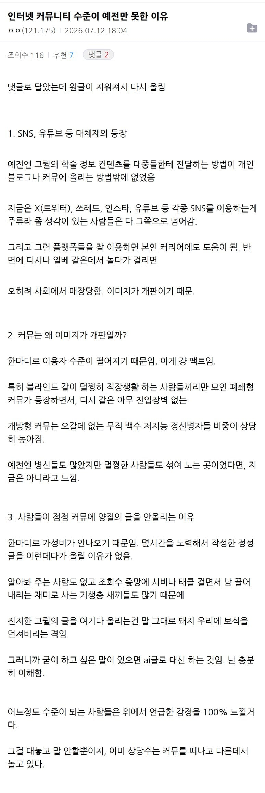

어느정도 동감

블라인드같은 멀.쩡.한 ㅋㅋㅋㅋㅋㅋㅋㅋ 블라인드 적당히해라
'비교적' 멀쩡하긴 하것지.
아니 뭐 옛날에 얼마나 고급진 커뮤를 하셨길래..
대표적인 예가 있네
그래서 거진 다 유튜브나 다른곳에서 일어난 이슈들 렉카해오는거지
어느정도?동감?
지성인드립넷
그래서 그 다른데가 어딘데?
인터넷 커뮤니티에 뭘 바라는거야
뭐 블라인드가 디씨보다는 필터링이 있겠지만 블라인드도 정신나간 새끼들 많고 계정 사고파는 새끼들도 있긴해
저번에 블라인드에 경찰청 직원 계정으로 칼부림예고 올렸다가 잡혔는데 실제로는 일반 회사원이었던 것처럼 말이야.
퍼오면되자나
어떻게 맨날 정식만 먹냐. 분식도 먹어야지